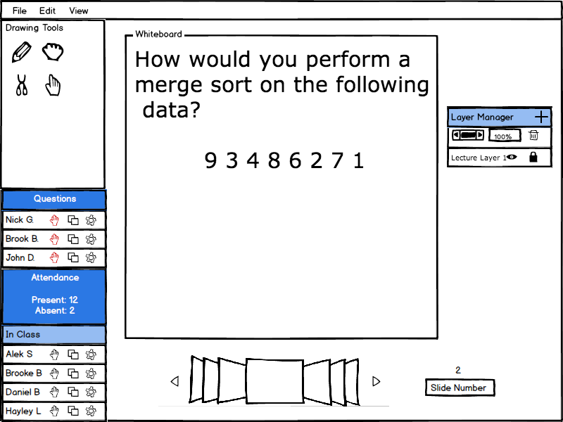
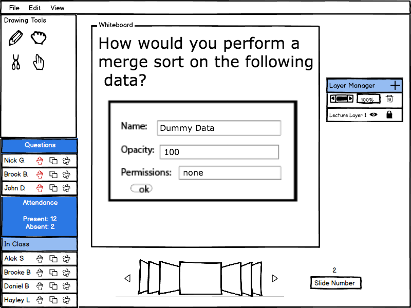
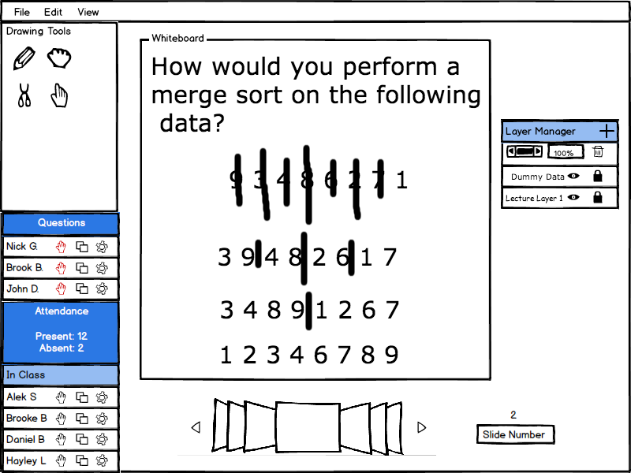

The layer manager has a few basic functions; the presenter can determine the permissions for each layer, adjust the opacity, and add or delete a layer. As shown below in Figure 1, once the eye icon is clicked, the system responds by dimming the color of the selected layer in the layer manager and making the layer invisible to everyone else. The presenter can also click the lock icon, which brings up a menu where they can select individual students or everyone to have access to that layer.

Figure 1: Base Layer Manager.
 
Figure 2: New Layer Flow